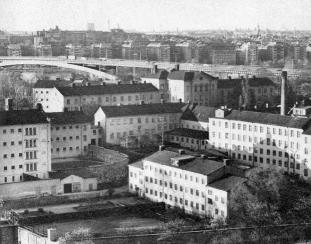
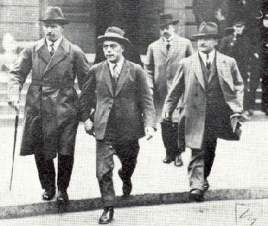

Södermalm i tid och rum
Ur Stockholmsliv, Staffan Tjerneld, 1972Det stora fängelsekomplexet på Långholmen har varit på väg bort många gånger, men alltid har något kommit emellan. Alla har länge varit eniga om att det är helt olämpligt för sitt ändamål. Det är mer än hundra år sedan det ansågs modernt och humant. Långholmen, liksom en rad mindre fängelser i våra provinsstäder av vilka åtskilliga finns kvar, ingick i den aktion för bättre behandling av fångarna som kung Oscar I tog initiativ till. Förut hade fångar förvarats i källare, ofta slagna i bojor. Att var och en nu skulle få en egen cell ansågs öka deras känsla av människovärde. Att isoleringen var en extra börda var en åsikt som först på 1900-talet började göra sig gällande.
| Långholmen har också varit ett fängelse för personer som dömts för politiskt olämplig verksamhet, som satt "statens säkerhet i fara". Mest omtalat var det så kallade förräderimålet 1916. Zeth Höglund, Ivan Oljelund och Erik Hedén ställdes inför rätta anklagade för antimilitaristisk propaganda. Vid en kongress av ombud från de socialdemokratiska ungdomsklubbarna hade de uppmanat till värnpliktsvägran. |
  1954 1954
|
I varje fall uppfattades deras anföranden så. Målet gick ända upp i Högsta domstolen, där Erik Hedén frikändes medan Höglund fick sitt straff fastställt till fängelse i ett år och Oljelund till åtta månader. Båda skulle få avräkna de fyra månader de tillbringat i Rannsakningshäktet på Kungsholmen. Ryktet om den slutliga domen spred sig hastigt i Stockholm och på eftermiddagen samlades en större skara meningsfränder utanför Rannsakningshäktet för att ta emot den frigivne Erik Hedén. |
Där syntes Ture Nerman, Fredrik Ström, Hannes Sköld och fru Z. Höglund med en liten dotter. Ett par timmar senare körde ett par täckta bilar ut genom porten. De skulle föra Z. Höglund och Ivan Oljelund till Långholmen. Höglund hade med sig den vilstol han fått ha i häktet och chefen på Långholmen lovade att de ljusaste cellerna skulle ställas till herrarnas disposition. De framhöll att de var mycket nöjda med den behandling de fått.
Många gånger har det blåst opinionsstormar kring Långholmen, inte minst på 30- och 40-talen då socialminister Gustav Möllers maka, fru Else Kleen, gick till angrepp mot missförhållanden i fängelser och på skyddshem. Vid sina besök på skyddshemmen 1934 visade fru Kleen upp ett papper från sin man socialministern, som uppmanade hemmets föreståndare att låta fru Kleen göra sina studier. Papperet blev föremål för mycket diskussion, var det ett privatbrev eller en ämbetsskrivelse? Många menade att fru Kleen hade rätt i sin kritik av behandlingen av den "svårhanterliga ungdomen". En indirekt bekräftelse kom då Medicinalstyrelsen två år senare fastslog att kroppsaga inte skulle få förekomma på flickor över tolv år och pojkar över femton. Därmed gick styrelsen emot skyddshemspersonalens mening.
Else Kleen fortsatte med att granska förhållandena på Långholmen, där hon vände sig emot de så kallade källarresorna, vistelsen i särskilda isoleringsceller i källarvåningen. Fru Kleen gjorde en anmälan till justitiedepartementet och samma dag kom en bok ut skriven av Bruno Poukka med ett förord av fru Kleen. Poukka hade 1925 gjort sig skyldig till det så kallade Nackamordet på en chaufför och avtjänat straff tills han 1938 benådades. Anmälan till justitiedepartementet föranledde ingen åtgärd och en del menade att fru Kleen visat dåligt omdöme då hon allierat sig med dråparen Poukka. I en skrivelse från Långholmsfängelsets tjänstemän heter det:
|
Fru Kleens presentation av Bruno Poukka är i viktiga punkter vilseledande och oriktig. Före sin ankomst till Sverige 1925 hade Poukka upprepade gånger straffats för stölder, hemfridsbrott m. m. i Finland. Fru Kleen uppger att Poukka icke är någon mördare och att "de som känna honom veta att han heller aldrig skulle kunnat bli en mördare". Till detta kan sägas att Poukka under sin vistelse här i en skrivelse till en tjänsteman givit en utförlig, fruktansvärt makaber skildring av hur han med "tillhjälp av tänderna" dödat en man i Finland. Hela hans uppträdande inom anstalten präglades för övrigt av stor råhet och cynism. Bruno Poukka begick det så kallade Nackamordet 1925 och återvänder till Stockholm efter att ha gripits av polisen. Han benådades 1938 och skildrade fängelsevistelsen i en bok. Socialminister Möllers maka Else Kleen skrev förordet. Foto: Dagens Nyheter. |
 |
På 40-talet inledde fru Kleen nya kampanjer mot Långholmen, denna gång mot vissa läkare. Resulatet blev beskyllningar och motbeskyllningar och en rättegång där frågan om huruvida en skrivelse från socialministerns kansli skulle uppfattas som intern eller inte var en av huvudpunkterna. Fru Kleen var för övrigt känd som en skicklig modeskribent under signaturen Gwen.
Långholmens vackra läge har gjort att planerna om användningen efter fängelsetiden varit många. Ett stort projekt med ett tivoli föll på bristen på parkeringsplatser. Kanske kan ön då vattnet i Riddarfjärden en gång är rent bli vad den tidigare var, en omtyckt badplats för söderborna. På Mälarvarvets område finns många gamla trähus kvar, lämpliga för kulturell verksamhet av något slag och Karlshälls gård på den västra udden är ett trevligt minne från en tid, då man inte behövde fara längre bort än så här för att få sommarro. Västerbron har inte nämnvärt förstört lugnet på Långholmen. Ett fint stycke Stockholm är Pålsundet med sina många motorbåtar och en lustig utsikt in mot Riddarholmen.